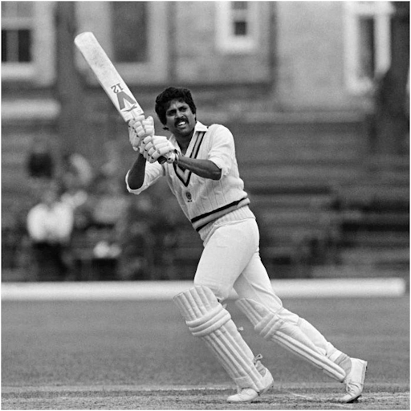

Cricket,England’s national summer sport, which is now played throughout the world, particularly in Australia, India, Pakistan, the West Indies, and the British Isles.
Cricket is played with a bat and ball and involves two competing sides (teams) of 11 players. The field is oval with a rectangular area in the middle, known as the pitch, that is 22 yards (20.12 metres) by 10 feet (3.04 metres) wide. Two sets of three sticks, called wickets, are set in the ground at each end of the pitch. Across the top of each wicket lie horizontal pieces called bails. The sides take turns at batting and bowling (pitching); each turn is called an “innings” (always plural). Sides have one or two innings each, depending on the prearranged duration of the match, the object being to score the most runs. The bowlers, delivering the ball with a straight arm, try to break (hit) the wicket with the ball so that the bails fall. This is one of several ways that the batsman is dismissed, or put out. A bowler delivers six balls at one wicket (thus completing an “over”), then a different player from his side bowls six balls to the opposite wicket. The batting side defends its wicket.
There are two batsman up at a time, and the batsman being bowled to (the striker) tries to hit the ball away from the wicket. A hit may be defensive or offensive. A defensive hit may protect the wicket but leave the batsmen no time to run to the opposite wicket. In that case the batsmen need not run, and play will resume with another bowl. If the batsman can make an offensive hit, he and the second batsman (the nonstriker) at the other wicket change places. Each time both batsmen can reach the opposite wicket, one run is scored. Providing they have enough time without being caught out and dismissed, the batsmen may continue to cross back and forth between the wickets, earning an additional run for each time both reach the opposite side. There is an outside boundary around the cricket field. A ball hit to or beyond the boundary scores four points if it hits the ground and then reaches the boundary, six points if it reaches the boundary from the air (a fly ball). The team with the highest number of runs wins a match. Should both teams be unable to complete their number of innings before the time allotted, the match is declared a draw. Scores in the hundreds are common in cricket. Matches in cricket can range from informal weekend afternoon encounters on village greens to top-level international contests spread over five days in Test matches and played by leading professional players in grand stadiums.
History
Cricket is believed to have begun possibly as early as the 13th century as a game in which country boys bowled at a tree stump or at the hurdle gate into a sheep pen. This gate consisted of two uprights and a crossbar resting on the slotted tops; the crossbar was called a bail and the entire gate a wicket. The fact that the bail could be dislodged when the wicket was struck made this preferable to the stump, which name was later applied to the hurdle uprights. Early manuscripts differ about the size of the wicket, which acquired a third stump in the 1770s, but by 1706 the pitch—the area between the wickets—was 22 yards long. The ball, once presumably a stone, has remained much the same since the 17th century. Its modern weight of between 5.5 and 5.75 ounces (156 and 163 grams) was established in 1774. The primitive bat was no doubt a shaped branch of a tree, resembling a modern hockey stick but considerably longer and heavier. The change to a straight bat was made to defend against length bowling, which had evolved with cricketers in Hambledon, a small village in southern England. The bat was shortened in the handle and straightened and broadened in the blade, which led to forward play, driving, and cutting. As bowling technique was not very advanced during this period, batting dominated bowling through the 18th century.
The early years
Earliest reference to an 11-a-side match, played in Sussex for a stake of 50 guineas, dates from 1697. In 1709 Kent met Surrey in the first recorded intercounty match at Dartford, and it is probable that about this time a code of laws (rules) existed for the conduct of the game, although the earliest known version of such rules is dated 1744. Sources suggest that cricket was limited to the southern counties of England during the early 18th century, but its popularity grew and eventually spread to London, notably to the Artillery Ground, Finsbury, which saw a famous match between Kent and All-England in 1744. Heavy betting and disorderly crowds were common at matches. The aforementioned Hambledon Club, playing in Hampshire on Broadhalfpenny Down, was the predominant cricket force in the second half of the 18th century before the rise of the Marylebone Cricket Club (MCC) in London. Formed from a cricket club that played at White Conduit Fields, the club moved to Lord’s Cricket Ground in St. Marylebone borough in 1787 and became the MCC and in the following year published its first revised code of laws. Lord’s, which was named after its founder, Thomas Lord, has had three locations over its history. Moving to the current ground in St. John’s Wood in 1814, Lord’s became the headquarters of world cricket. In 1836 the first match of North counties versus South counties was played, providing clear evidence of the spread of cricket. In 1846 the All-England XI, founded by William Clarke of Nottingham, began touring the country, and from 1852, when some of the leading professionals (including John Wisden, who later compiled the first of the famous Wisden almanacs on cricketing) seceded to form the United All-England XI, these two teams monopolized the best cricket talent until the rise of county cricket. They supplied the players for the first English touring team overseas in 1859.
Technical development
Until early in the 19th century all bowling was underhand, and most bowlers favoured the high-tossed lob. Next came “the round-arm revolution,” in which many bowlers began raising the point at which they released the ball. Controversy raged furiously, and in 1835 the MCC rephrased the law to allow the hand to be raised as high as the shoulder. The new style led to a great increase in pace, or bowling speed. Gradually bowlers raised the hand higher and higher in defiance of the law. Matters were brought to a head in 1862 when an England team playing against Surrey left the field at London’s Kennington Oval in protest over a “no ball” call (i.e., an umpire’s decision that the bowler has thrown an illegal pitch). The argument centred on whether the bowler should be allowed to raise his arm above the shoulder. As a result of this controversy, the bowler was in 1864 officially accorded liberty to bowl overhand (but not to cock and straighten the arm). This change dramatically altered the game, making it yet more difficult for a batsman to judge the ball. Already a bowler was allowed to take a running start from any direction and for any distance. Once the bowler was allowed to release overhand, the ball could then reach speeds above 90 mph (145 km/hr). Though this is not as fast as the pitching speed in baseball, cricket has an additional twist in that the ball is usually delivered so as to bounce on the pitch (field) before the batsman can hit it. Thus, the ball may curve to the right or the left, bounce low or high, or spin toward or away from the batsman.
Batsmen learned to protect themselves with pads and batting gloves, and a cane handle increased the resilience of the bat. Only the best batsmen, however, could cope with fast bowling, because the poor condition of most pitches made it yet more difficult for a batsman to predict the motion of the ball. As the grounds improved, however, batsmen grew accustomed to the new bowling style and went on the offensive. Other new bowling styles were also discovered, causing batsmen to adjust their technique further.

In the early 20th century so many runs were being scored that debate ensued on reforming the “leg-before-wicket” law, which had been introduced in the 1774 laws to prohibit a batsman from using his body to prevent the ball from hitting his wicket. But the heavy scores were actually due to the performances of several outstanding batsmen, such as W.G. Grace, Sir John Berry Hobbs, and K.S. Ranjitsinhji (later the maharaja of Nawanagar). This was cricket’s golden age.
In the 20th century there was a series of attempts to aid the bowler and quicken the tempo of the game. Nevertheless, the game by the mid-20th century was characterized not by overwhelming offense but by defensive play on both sides and by a slow pace. In an attempt to shore up a declining fan base, one-day, or limited-overs, cricket was introduced. One-day cricket had first been played internationally when, after a Test match was rained out for the first days, on the last scheduled day of play a limited-overs match was held in order to give the fans some game to watch. The response was enthusiastic, and one-day cricket came into being. In this version of cricket the limited number of overs (usually 50 per side) leads to a faster paced though much-altered game. In one-day cricket there are some restrictions on placement of fielders. This led to new batting styles, such as the paddle shot (wherein the ball is hit behind the wicket because there are usually no fielders there) and the lofted shot (where the batsman tries to hit the ball past the fielders and over their heads). Twenty20 (T20), a style of one-day cricket consisting of 20 overs per side, debuted in 2003 and quickly became an international sensation. The first Twenty20 world championship was held in 2007, and one-day cricket, particularly Twenty20, became more popular than Test matches worldwide, although Test cricket retained a large following in England. The pace of Test matches increased dramatically in the late 20th century with the introduction of new bowling strategies.
Cricket Legends
 Sachin Tendulkar is considered one of the greatest cricketers of all time. He is a former Indian cricketer and captain, widely regarded as one of the greatest batsmen in the history of cricket. He is the highest run scorer of all time in International cricket. Tendulkar has scored over 34,000 runs in international cricket, including 100 centuries, and is the only player to score a double century in ODI cricket. He has also won numerous awards for his performances, including the Bharat Ratna, India's highest civilian award in 2013. Tendulkar made his debut for India in 1989 and played his last Test match in 2013. He retired from ODI cricket in 2012 and T20I cricket in 2013. He is widely regarded as one of the greatest batsmen of all time and a cricketing icon in India.
Sachin Tendulkar is considered one of the greatest cricketers of all time. He is a former Indian cricketer and captain, widely regarded as one of the greatest batsmen in the history of cricket. He is the highest run scorer of all time in International cricket. Tendulkar has scored over 34,000 runs in international cricket, including 100 centuries, and is the only player to score a double century in ODI cricket. He has also won numerous awards for his performances, including the Bharat Ratna, India's highest civilian award in 2013. Tendulkar made his debut for India in 1989 and played his last Test match in 2013. He retired from ODI cricket in 2012 and T20I cricket in 2013. He is widely regarded as one of the greatest batsmen of all time and a cricketing icon in India.
 Virat Kohli is a professional Indian cricketer and the current captain of the Indian national team. He is considered one of the best batsmen in the world and has numerous records to his name. Kohli made his international debut in 2008 and quickly established himself as a top-order batsman. He has a strong aggressive playing style and is known for his fitness and work ethic. Kohli has been the recipient of many awards, including the Sir Garfield Sobers Trophy for ICC ODI Player of the Year in 2017, and 2018. He has also been honored with the ICC ODI Player of the Year award in 2012, 2017, 2018, and 2019.
Virat Kohli is a professional Indian cricketer and the current captain of the Indian national team. He is considered one of the best batsmen in the world and has numerous records to his name. Kohli made his international debut in 2008 and quickly established himself as a top-order batsman. He has a strong aggressive playing style and is known for his fitness and work ethic. Kohli has been the recipient of many awards, including the Sir Garfield Sobers Trophy for ICC ODI Player of the Year in 2017, and 2018. He has also been honored with the ICC ODI Player of the Year award in 2012, 2017, 2018, and 2019.
 Mahendra Singh Dhoni, commonly known as MS Dhoni, is a former Indian cricketer and captain of the Indian national team. He is considered one of the greatest cricketers in the history of the game and is known for his calm and composed leadership style. Dhoni made his international debut in December 2004 and went on to captain the Indian team for over a decade. Under his captaincy, India won the 2007 ICC World Twenty20, the 2010 Asia Cup, the 2010 and 2016 Asia Cup, and the 2007-08 Commonwealth Bank Series. He also led India to the number-one spot in the ICC Test rankings for the first time. In June 2013, when India defeated England in the final of the Champions Trophy, Dhoni became the first captain to win all three ICC limited-overs trophies (World Cup, Champions Trophy, and World Twenty20). He retired from international cricket on August 15, 2020.
Mahendra Singh Dhoni, commonly known as MS Dhoni, is a former Indian cricketer and captain of the Indian national team. He is considered one of the greatest cricketers in the history of the game and is known for his calm and composed leadership style. Dhoni made his international debut in December 2004 and went on to captain the Indian team for over a decade. Under his captaincy, India won the 2007 ICC World Twenty20, the 2010 Asia Cup, the 2010 and 2016 Asia Cup, and the 2007-08 Commonwealth Bank Series. He also led India to the number-one spot in the ICC Test rankings for the first time. In June 2013, when India defeated England in the final of the Champions Trophy, Dhoni became the first captain to win all three ICC limited-overs trophies (World Cup, Champions Trophy, and World Twenty20). He retired from international cricket on August 15, 2020.
 AB de Villiers, commonly known as ABD, is a retired South African cricketer and former captain of the South African national team. He is considered one of the best batsmen in the world and is known for his aggressive and unorthodox playing style. De Villiers made his international debut in December 2004 and went on to become one of the most successful and popular cricketers of his generation. He is widely regarded as one of the best batsmen in the world and one of the greatest ODI players of all time. He holds many records such as the fastest century in ODIs by a South African the and fastest century by any in ODIs. He is also known as 'Mr. 360' due to his ability to play shots all around the ground. He retired from international cricket in May 2018.
AB de Villiers, commonly known as ABD, is a retired South African cricketer and former captain of the South African national team. He is considered one of the best batsmen in the world and is known for his aggressive and unorthodox playing style. De Villiers made his international debut in December 2004 and went on to become one of the most successful and popular cricketers of his generation. He is widely regarded as one of the best batsmen in the world and one of the greatest ODI players of all time. He holds many records such as the fastest century in ODIs by a South African the and fastest century by any in ODIs. He is also known as 'Mr. 360' due to his ability to play shots all around the ground. He retired from international cricket in May 2018.
 Chris Gayle is a West Indian cricketer who is considered one of the most destructive batsmen in the sport. He is a left-handed opening batsman and has represented teams such as the West Indies, Jamaica, and Royal Challengers Bangalore. Gayle is the first player to score a triple century in Tests, a double century in ODIs, and a century in Twenty20 Internationals. He also holds the record for the fastest century in World Twenty20 and the highest individual score in Twenty20 Internationals. Gayle is known for his aggressive playing style and powerful hitting. He is also known for his big-hitting in T20 leagues around the world and has played for teams such as Jamaica Tallawahs, Melbourne Renegades, and Kings XI Punjab.
Chris Gayle is a West Indian cricketer who is considered one of the most destructive batsmen in the sport. He is a left-handed opening batsman and has represented teams such as the West Indies, Jamaica, and Royal Challengers Bangalore. Gayle is the first player to score a triple century in Tests, a double century in ODIs, and a century in Twenty20 Internationals. He also holds the record for the fastest century in World Twenty20 and the highest individual score in Twenty20 Internationals. Gayle is known for his aggressive playing style and powerful hitting. He is also known for his big-hitting in T20 leagues around the world and has played for teams such as Jamaica Tallawahs, Melbourne Renegades, and Kings XI Punjab.